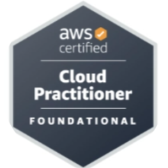

My Projects.
AWS CI/CD Pipeline for Static Portfolio Website Hosting using S3.
Built and deployed a static portfolio website using AWS CodePipeline, CodeBuild, and GitHub to enable fully automated CI/CD. Integrated GitHub as the source stage, triggering automatic deployments to Amazon S3 on every code push. Managed IAM roles, buildspec files, and followed best practices for secure and efficient static website hosting on AWS.
Serverless Web App Deployment using AWS S3, Lambda, API Gateway, DynamoDB & CloudFront.
Developed a serverless web application using Amazon S3 for static content, API Gateway (GET & POST methods), AWS Lambda (Python), and DynamoDB for dynamic data handling. Integrated CloudFront to enable HTTPS and ensure low-latency, secure delivery of static web assets. Created Lambda functions to process user input and connect seamlessly with DynamoDB — eliminating the need for traditional server management.
My Skills.
Cloud Platforms
☁️ AWS (EC2, S3, IAM, VPC,RDS)
Operating Systems
🐧 Linux (basic commands and server handling)
Version Control & Programming
🔧 Git / GitHub & 💻 Python (beginner)
My Certifications.

AWS Certified Cloud Practitioner
I earned my AWS Certified Cloud Practitioner certification on March 15, 2024.It helped me build a strong foundation in AWS services, cloud concepts, security, and pricing models. This milestone marks the beginning of my exciting journey in cloud engineering!